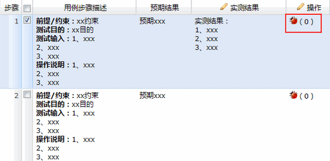

Step1. 登录oKit前台，点击进入项目管理模块，并进入测试管理标签页

Step2. 点击添加测试用例文档
Step3. 输入文档名称，标识
Step4. 点击打开测试用例文档
Step5. 点击添加节次

Step6. 选中节次，点击添加用例
Step7. 编写测试用例信息及内容，并保存
Step8. 继续添加完全部测试用例，切换到测试活动标签页
Step9. 点击添加测试活动
Step10. 输入测试活动信息，并保存
Step11. 在测试阶段列表中，点击为各测试阶段添加测试用例
Step12. 选中测试用例文档，并点击确定
Step13. 设置测试活动状态“正在执行”

Step14. 设置阶段一状态“正在执行”
Step15. 点击“录入测试结果”
Step16. 点击“录入结果”按钮，进入录入测试结果界面
Step17. 在录入测试结果界面，双击输入实测结果
Step18. 在录入测试结果界面，点击提交发现的缺陷

Step19. 该测试用例全部测试结果录入完成后，点击状态，选择“测试完毕（通过）”，保存并退出，继续执行下一个测试用例。
Step20. 全部测试用例的测试结果录入完成后，修改测试阶段状态为“已完成”，至此，该测试活动的第一阶段测试已完成。
Step21. 所有测试阶段均完成后，修改该测试活动的状态为“已完成”，至此，改次测试活动已完成。
更多关于测试管理的资料，请点击